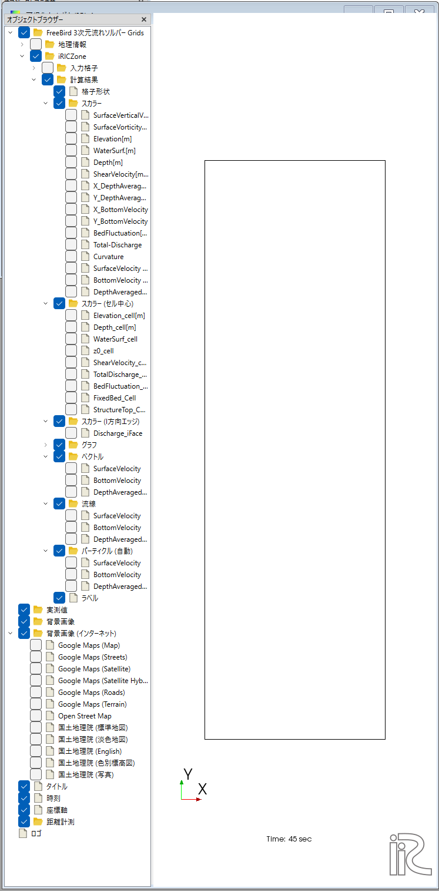
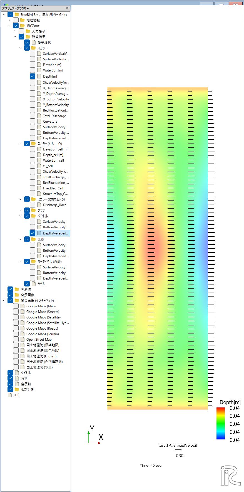
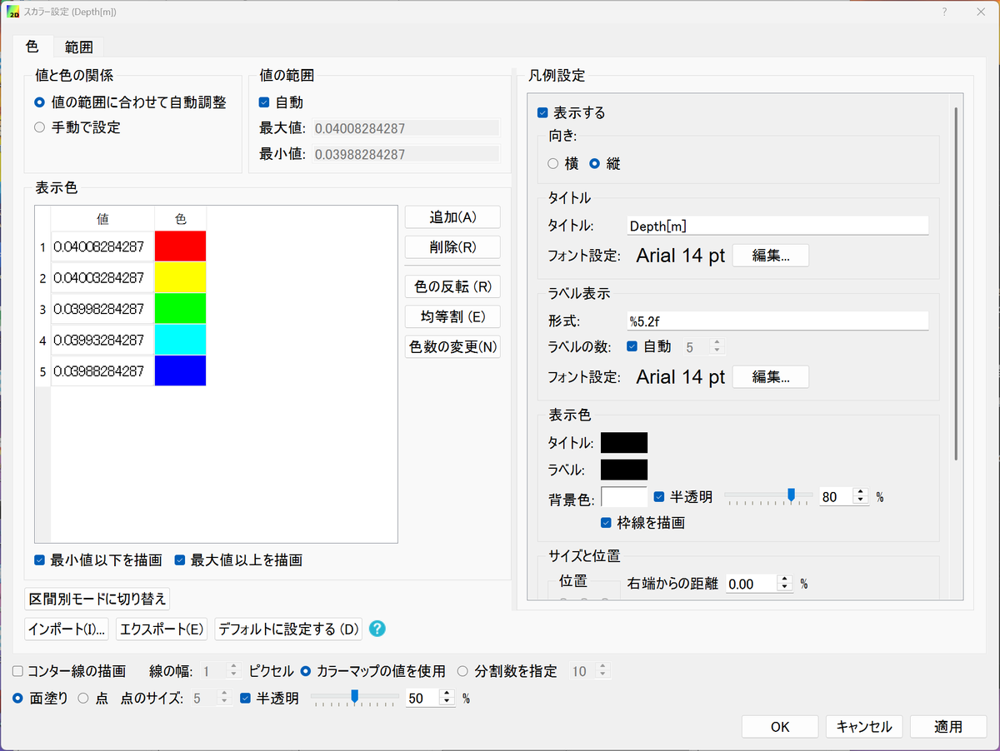

2次元の結果の表示¶
対応バージョン: 2.0.20261007 の次のリリース
水深・水位・河床変動などの平面分布や、水深平均流速・表層流速・底層流速のベクトルを表示します。
ウィンドウを開く¶
メニューの「計算結果」から、2次元の可視化ウィンドウを開きます。左のオブジェクトブラウザーの「iRICZone」→「計算結果」の下に、表示できる結果が種類ごとに並びます。

| 項目 | 内容 |
|---|---|
| 格子形状 | 格子の線 |
| スカラー | ノードの値の色分け（コンター）。Depth[m]、WaterSurf.[m]、BedFluctuation[m] など |
| スカラー（セル中心） | セルの値の色分け。Depth_cell[m]、ShearVelocity_cell など |
| スカラー（I方向エッジ） | セル境界の値（Discharge_iFace） |
| グラフ | 格子上の線に沿った値のグラフ |
| ベクトル | 流速のベクトル（SurfaceVelocity、BottomVelocity、DepthAveragedVelocity） |
| 流線 | 流速の流線 |
| パーティクル（自動） | 流れに乗って動く粒子の表示 |
各結果の意味は「出力される計算結果」を参照してください。表示する時刻は、ツールバーの時刻の欄で選びます。
コンターとベクトルを表示する¶
- 「スカラー」の下の表示したい結果（例：Depth[m]）にチェックを入れます。値が色分けで表示され、右下に凡例が出ます。
- 「ベクトル」の下の流速（例：DepthAveragedVelocity）にチェックを入れます。コンターにベクトルが重なります。

色・凡例の設定¶
結果の名前を右クリックして「プロパティ」を選ぶ（またはダブルクリック）と、設定画面が開きます。

- 値の範囲：「自動」のチェックを外すと、色を割り当てる最大値・最小値を指定できます。複数の時刻や計算を同じ色で比べるときに使います。
- 表示色：値と色の対応です。「区間別モードに切り替え」で、色を段階的に分けた表示にできます。
- 凡例のラベルの形式：右側の「ラベル表示」の「形式」で、数値の桁数を指定します。
%5.2fは小数点以下2桁です。値の変化が小さく凡例の数値がすべて同じになる場合は、%6.4fのように桁を増やします。 - コンター線・半透明：画面下の「コンター線の描画」で等値線を重ねられます。「半透明」で、下の背景画像などを透かして表示できます。